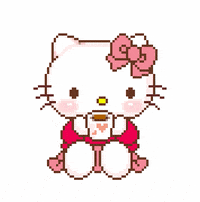
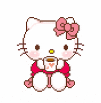

Personagens
Keroppi
Um sapinho com olhos grandes e uma boca em forma de V que mora na França. Keroppi adora aventura e sua personalidade borbulhante o torna popular em Donut Pond.
Go somewhereMy melody
É uma coelhinha de pelo branco que sempre usa um capuz vermelho ou rosa que também cobre as orelhas que tem como melhores amigos My Sweet Piano (a ovelha) e Flat (o rato).
Go somewhere
Kuromi
É a rival de My Melody originada do anime Onegai My Melody onde é a vilã. Ela é uma coelha anã branca usando um chapéu de bobo da corte preto com uma caveira rosa estampada.
Go somewhereBadtz-Maru
Um pinguim macho com cabelo espetado. Seu aniversário é 1º de abril (Dia da Mentira). Ele é um dos poucos personagens da Sanrio que é comercializado para ambos os sexos. Em japonês, "badtz" (batsu) é um termo para "X".
Go somewhereLittle Twin Stars
São um par de personagens parecidos com anjos. O irmão mais novo é Kiki (キ キ, Kiki), e a irmã mais velha é Lala (ラ ラ, Rara). Kiki tem cabelo azul, enquanto Lala tem cabelo rosa (às vezes o cabelo de Kiki é castanho enquanto o cabelo de Lala é loiro).
Go somewhereTuxedo Sam
Um pinguim fofo que é um dos "amigos" da Hello Kitty que agora mora na Inglaterra. Sam é um pinguim rechonchudo azul e branco que usa uma gravata borboleta vermelha e um boné redondo branco de marinheiro com uma fita azul.
Go somewhereMuito obrigado pela visita!
Nós e a Hello Kitty agradecemos pelo acesso ao nosso site feito com muito carinho
 
